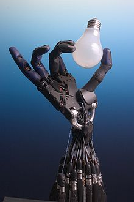

Robótica submarina para la sostenibilidad y la observación del océano
Los océanos se han convertido en un gran centro de operaciones clave para nutrirnos de recursos, no solo petróleo, gas natural o minerales como el cobalto o el níquel, sino también de la energía renovable generada gracias a los parques eólicos del mar,
a las mareas, las corrientes o las olas. Por eso, la industria offshore o de ultramar cada vez es más importante y su radio de acción en el mar va buscando poco a poco aguas más profundas. Esta inmersión en los horizontes oceánicos
exige la construcción y el mantenimiento de infraestructuras muy sofisticadas que no siempre son fáciles de preservar. De hecho, muchas de estas operaciones submarinas tienen que realizarlas buzos profesionales en misiones a veces
realmente peligrosas. Utilizar vehículos submarinos no tripulados (AUV/ROV) podría ser una solución, pero hasta el momento habían sido dispositivos difíciles de operar y con un alto coste económico.

La robótica como un recurso para facilitar el aprendizaje y desarrollo de competencias generales
La creciente importancia que tiene la tecnología en el mundo hoy en día y su continuo desarrollo, hace que la tecnología, en sí misma, se convierte en parte integral del proceso de formación en la niñez y la juventud. Por esta razón es importante desarrollar
propuestas en las que se ofrezca a niños y jóvenes la posibilidad de entrar en contacto con las nuevas tecnologías; esto es posible a través del manejo de herramientas de software y hardware, como prototipos robóticos y programas
especializados con fines pedagógicos. Este artículo muestra la importancia que tiene el uso de la robótica como una herramienta de aprendizaje y presenta las etapas típicas que se deben afrontar al implementar proyectos de
robótica educativa en el aula de clase. También se da a conocer un proyecto de robótica educativa denominado “Mundo Robótica” el cual busca involucrar la robótica en el aula de clase por medio de actividades prácticas y recursos
de aprendizaje articulados desde una plataforma virtual.